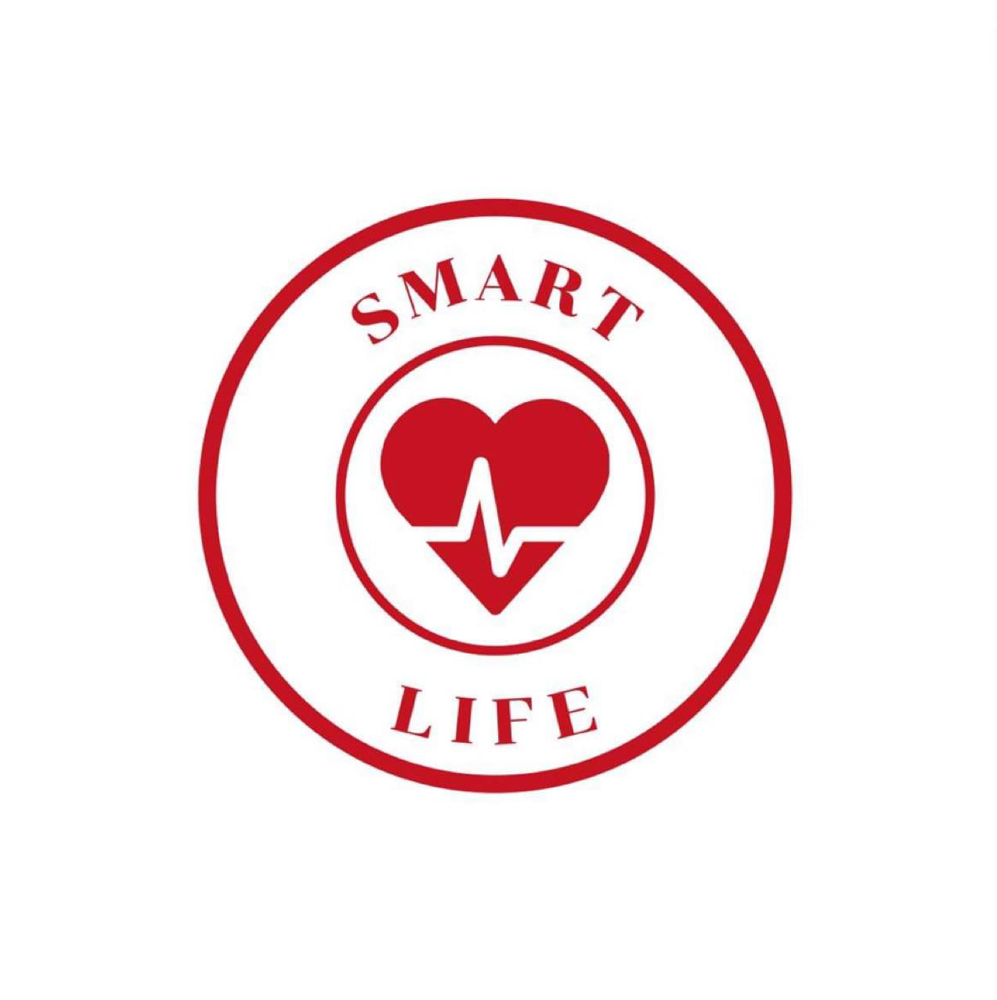

เกี่ยวกับ Smart life
ภารกิจของเราคือให้ข้อมูลและให้อำนาจแก่คุณได้ตัดสินใจด้วยข้อมูล วิธีการจัดการด้านสุขภาพและความเป็นอยู่ที่ดีที่ถูกต้อง
ความเห็นอกเห็นใจ และนำไปปฏิบัติได้ เพื่อให้คุณสามารถเลือกทางเลือกที่ดีที่สุดสำหรับสุขภาพและชีวิตของคุณ
กระบวนการแก้ไขของเรา
กระบวนการแก้ไขของเราสร้างขึ้นเพื่อช่วยให้คุณเข้าใจและเข้าใจข้อมูลด้านสุขภาพได้ง่าย
นักเขียนและบรรณาธิการของเราเป็นนักข่าวที่มีประสบการณ์ซึ่งกำลังแกะกล่องการศึกษาวิจัย ข้อมูล
และศัพท์แสงทางการแพทย์เพื่อให้แน่ใจว่าข้อมูลนี้ชัดเจน ถูกต้อง
เห็นอกเห็นใจ และนำไปดำเนินการได้เพื่อช่วยให้คุณตัดสินใจด้านสุขภาพได้ถูกต้อง
ทีมบรรณาธิการของเราดูแลการสร้างและพัฒนาเนื้อหาทั้งหมดของเรา
และนำเสนอข่าวด่วนด้านสุขภาพและหัวข้อด้านสุขภาพที่ยั่งยืนที่คุณกำลังค้นหา
เราจัดลำดับความสำคัญของความถูกต้องของเนื้อหาของเราและไม่ได้รับอิทธิพลจากผู้สนับสนุน
นโยบายความเป็นส่วนตัว
เราใช้ความเป็นส่วนตัวออนไลน์อย่างจริงจังและเราเคารพความกังวลของชุมชนผู้ใช้ของเรา
เราอาจเก็บรวบรวมข้อมูล รวมถึงข้อมูลส่วนบุคคล จากคุณโดยตรง หากคุณเลือกที่จะให้ข้อมูลนั้นเมื่อคุณเข้าถึงไซต์
เราและพันธมิตรบุคคลที่สามของเราอาจรวบรวมข้อมูลบางอย่างเกี่ยวกับการเยี่ยมชมของคุณโดยอัตโนมัติโดยใช้เครื่องมือต่างๆ
เช่น คุกกี้ เว็บบีคอน และเทคโนโลยีอื่นๆ ที่คล้ายคลึงกัน เราอาจใช้ข้อมูลที่รวบรวมบน smartlife.com เพื่อวัตถุประสงค์ต่างๆ
รวมถึงการตอบคำถามทางอีเมล และเพื่อให้บริการเนื้อหาโฆษณาและข้อเสนอแก่คุณตามความสนใจและกิจกรรมออนไลน์ของคุณ
นโยบายการโฆษณา
smartlife.com ยอมรับการโฆษณาบนไซต์ทั้งหมด แต่ยังคงแยกเนื้อหาโฆษณาและบทบรรณาธิการที่เข้มงวดและชัดเจน
เราให้ความสำคัญเป็นพิเศษกับการนำเสนอโฆษณาในลักษณะที่จะไม่รบกวนประสบการณ์การอ่านของคุณ